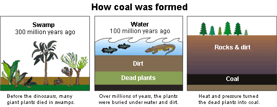
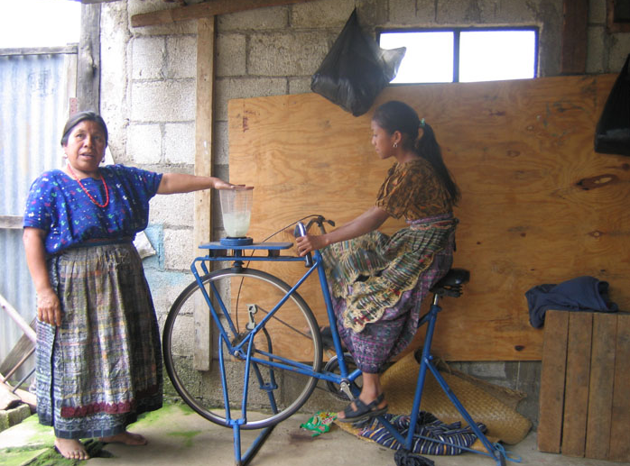
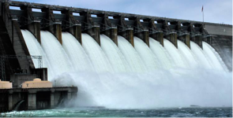
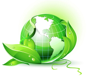
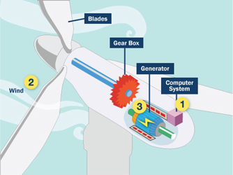
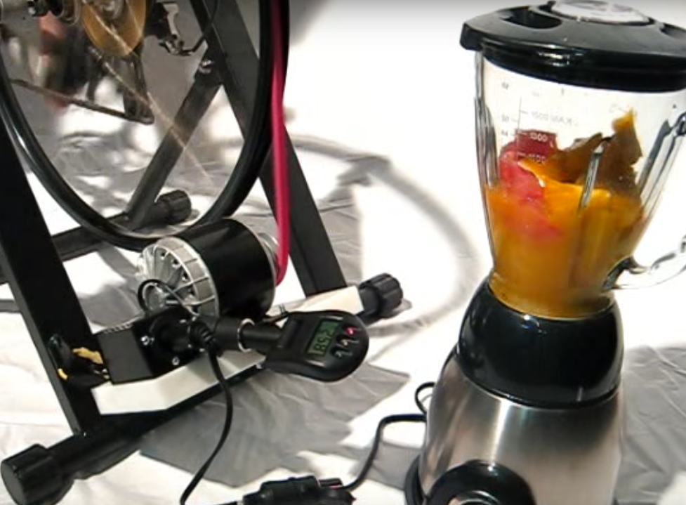
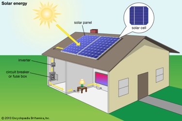
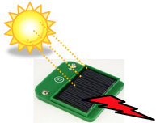

What You Should Know
What Types of Energy Do You Use?
Each day you use energy. You use it to go to school, to play, to do chores, and even to grow! What types of energy do you use?
|
|
|
|
heat our houses, and make electricity. |
Fossil Fuels: Buried Energy
Oil, gas, and coal are fossil fuels. These are non-renewable energy sources because we cannot make them as fast as we use them. They are quickly used up and it takes millions of years for new supplies to form.
Click here to learn more about non-renewable energy.
How Are Fossil Fuels Made?
Plants die and decay. Some plants become buried deep in the Earth. Heat and pressure change dead plants into coal, oil, and natural gas.
Why do you think oil, gas, and coal are called “fossil fuels”?
used to make various products including dishes, ink,
tires, yarn, and shoes. Gas is burned to heat homes.
Click here to learn more about fossil fuels.

What Is Renewable Energy?
Renewable energy sources include wind, solar, water, energy from plants (biomass), and human power.

The steam turns a generator to make electricity.
- Wind: Wind turbines are turned by the wind. As the turbines turn, they spin a generator. The motion creates energy, which converts into electricity.
- Solar: Sunlight shines on solar panels, which are made to convert light energy into electricity.
- Hydropower (Water): Flowing water turns a wheel to do work or to make electricity.
- Biomass: Energy made from plants.
- Human power: People do the work to create energy.
Click here to learn more about renewable energy
|
 |
and last for 20-25 years. |
 |
 fuels. |

Alternative Energy and Electricity

Renewable energy is also called alternative energy since it is an alternative to fossil fuels.
Electricity is a very important part of most alternative energy systems.
We cannot plug tools into renewable sources directly. In many cases, we need to convert the energy into electricity.
One way to make electricity is to use a force, such as wind, water, or human power, to turn a generator. A generator is like a motor but instead of electricity making the motor spin, the spinning generator creates electricity.
Click here to learn more about electricity.
|
 |
 |
Circuitry: Moving Electricity
To use electricity, we must move it from the source of the renewable energy (like a bicycle or a solar panel) to where we need it (like a blender or your home).
Circuits are the way we move electricity. They are electrical systems that allow us to produce, move, store, and control electricity. In a circuit, electricity flows from a power source (like a solar panel or battery) through a wire path to an electrical device (like a light or motor) and then back to the power source through another wire.
Changing Light into Electricity
The solar cell in your kit changes light energy into electricity. Light is made of particles called photons. Photons move very fast. The photons bump into particles in the solar cell causing them to move. The moving particles create a current of electricity.
Click here to learn more about solar energy.
Storing Electricity
We use electricity all day, every day. Where does electricity come from at night if we rely on solar panels? We need a way to store the electricity produced by renewable energy sources.
Batteries of all sizes and shapes store electricity. Solar panels and turbines change renewable energy into electricity. The electricity charges batteries and the batteries store the electricity until it is needed.